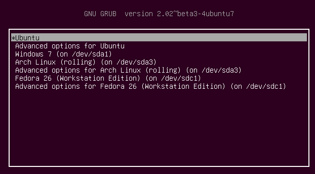
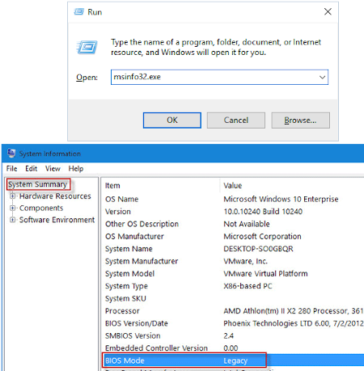
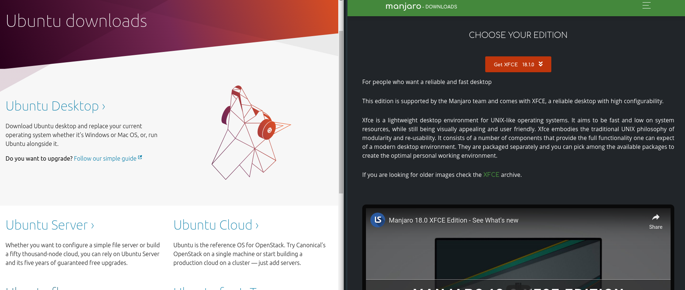

Instalacja Linuxa
i najważniejsze sprawy po instalacji
Cel prezentacji
-
Wyjaśnienie kilku mitów dotyczących linuxa, jego instalacji, etc
-
Dual-boot Windows / Linux - zrozumienie
-
Normalny czas pracy na baterii w przypadku laptopów
-
Rozwiązanie problemów z GPU w laptopach gamingowych
Plan prezentacji
FAQ
- Czy nie zepsuję sobie komputera/laptopa
- Czy mogę mieć dalej Windowsa?
- Co to są te dystrybucje i którą wybrać?
Instalacja
- Jak przygotować komputer
- Pendrive z linuxem
- Proces instalacji
I co potem?
- Praca na baterii
- Laptopy gamingowe i ich karty graficzne
- Podstawowe programy, edytory kodu, etc
FAQ
Czy nie zepsuję sobie komputera?
W najgorszym przypadku skasujesz sobie Windowsa,
ale tylko jeśli będziesz nieostrożny/na. Klikaj uważnie.
Nie dasz rady zepsuć komputera na amen.
Czy mogę mieć dalej windowsa?

Tak, możesz mieć Windowsa, komputer zapyta przy uruchomieniu
Czym są dystrybucje? Jaką wybrać?
-
Mimo że wyglądają inaczej, są naprawdę podobne
-
Nie wybieraj nic niszowego
-
Większa popularność - więcej supportu
-
Ubuntu / Manjaro
Instalacja
Jak przygotować komputer?
-
Wolna partycja
-
BIOS/UEFI - czego używasz?
-
Wyłączenie windowsowego fast startup
Wolna partycja

-
Partitions manager
-
~ 50GB - w miarę komfortowe minimum
BIOS/UEFI - czego używasz?

Wyłączenie windowsowego fast startup

Pendrive z linuxem
No właśnie, którym linuxem?

Zupełnie nowy komputer
- Manjaro
Komputer starszy niż rok
- Ubuntu
Mocne podzespoły
- GNOME Edition
Średnie podzespoły
- KDE Edition
Słabe/Stare podzespoły
- XFCE/LXDE Edition
Wypalanie pobranego ISO
-
Rufus
-
Etcher
Uruchamianie z pendrive'a lub DVD
-
Wyłącz komputer
-
Podłącz pendrive
-
Wejdź do BIOSa/UEFI
-
Wyłącz secure boot
-
Przełącz boot device na pendrive
-
Reset
Proces instalacji
-
Uważnie czytaj dialogi*
-
Jest tylko jeden trudny krok:
- wybór partycji
* Możesz chcieć zainstalować 3rd party software
Wybór partycji
-
Komputer na BIOSIE:
- stworzona wcześniej partycja, punkt montowania
'/', ext4
- stworzona wcześniej partycja, punkt montowania
-
Komputer na UEFI:
-
stworzona wcześniej partycja, punkt montowania
'/', ext4 -
pierwsza partycja na dysku, punkt montowania
'/boot/efi'^ NIE FORMATUJ PARTYCJI EFI
-
Po instalacji
Praca na baterii
-
Oszczędzanie baterii może być domyślnie wyłączone
-
Programy do oszczędzania baterii
-
tlp -
powertop(opcjonalnie)
-
TLP
Ubuntu
sudo apt update
sudo apt install tlp
sudo systemctl enable tlp
Manjaro
sudo pacman -Syu tlp
sudo systemctl enable tlp
Laptopy gamingowe - gracze powstańcie
Najlepiej po prostu wyłączyć GPU Nvidii
sudo echo "blacklist nouveau" > /etc/modprobe.d/pwr.conf
Podstawowe programy
App store w Ubuntu i w Manjaro działa już naprawdę spoko
Po więcej, zapraszam na kolejny wykład:
Instalowanie softu na Linuxie
-
Package managery
-
Instalowanie apek spoza oficjalnych repozytoriów